Monumento a la Revolución: Brunch auf einer Dachterrasse mit Blick auf das Revolutionsdenkmal. Der Bau war ursprünglich als Kuppel eines gigantischen Parlamentspalasts unter Porfirio Díaz geplant; die Revolution stoppte das Projekt, 1938 wurde das Stahlskelett zum Denkmal umgebaut. In den Pfeilern liegen heute Helden der Revolution wie Madero, Carranza und Pancho Villa.
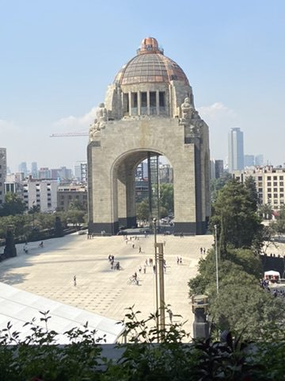
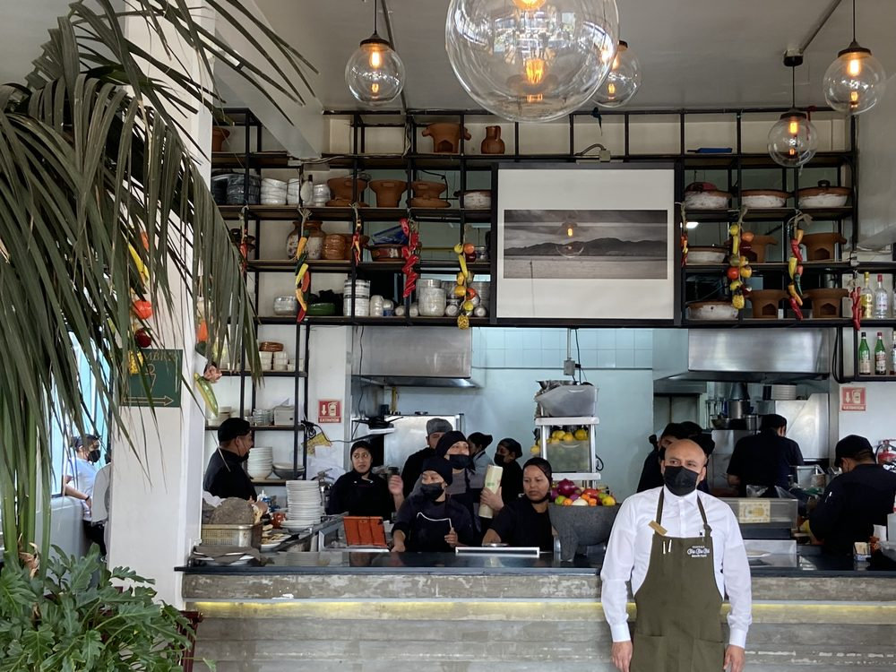
Sonntag in der Alameda Central: Die Alameda ist der älteste öffentliche Park Amerikas (1592). Sonntags gehört sie den Menschen der Stadt: Paare tanzen unter den Bäumen, Folklore-Tänzerinnen lassen ihre Röcke fliegen.
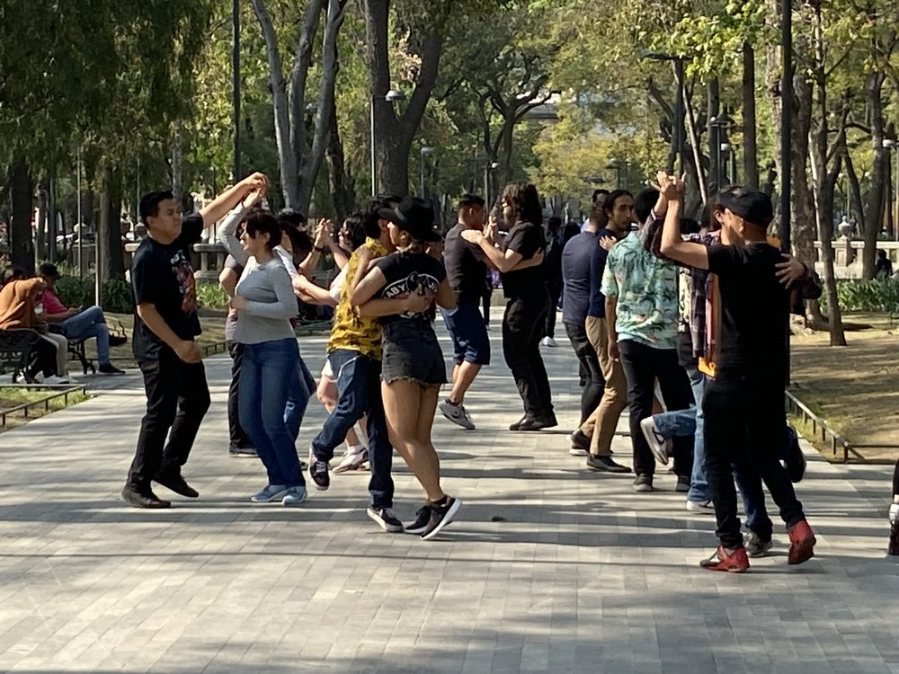
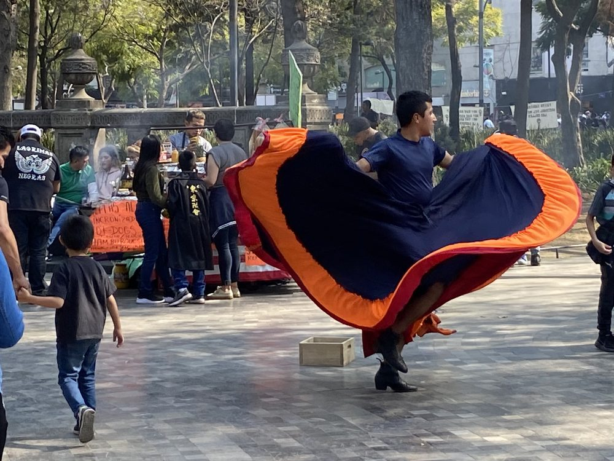
Palacio de Bellas Artes: Marmorfassade im Jugendstil, Innenräume im Art déco: Baubeginn 1904 unter Adamo Boari, fertig erst 1934 – dazwischen lagen Revolution und Geldnot. Innen hängen Wandbilder von Rivera, Siqueiros und Orozco. Der schwere Bau sinkt seit Jahrzehnten langsam in den weichen Seeboden.
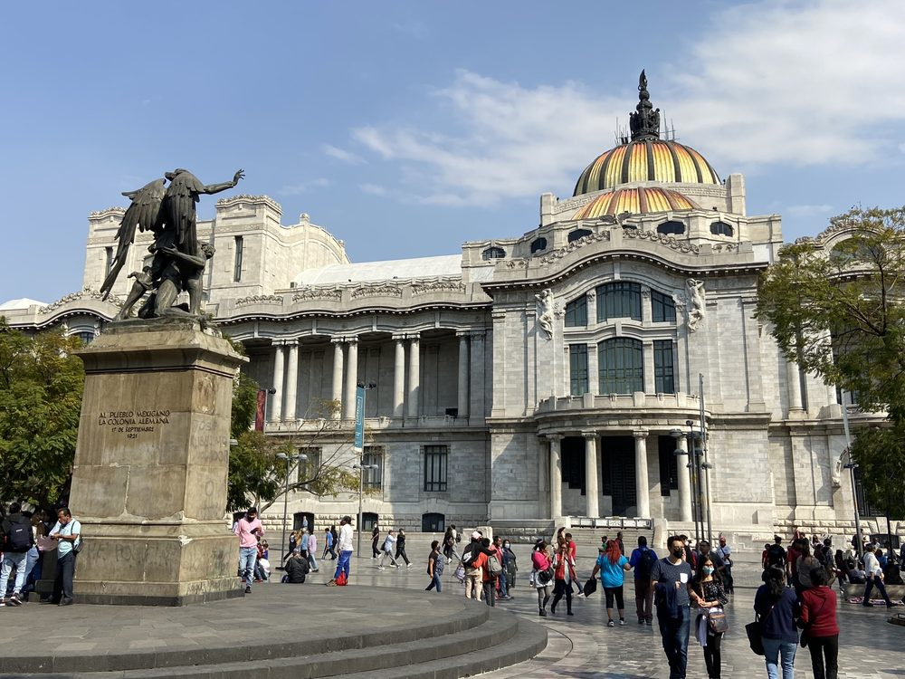
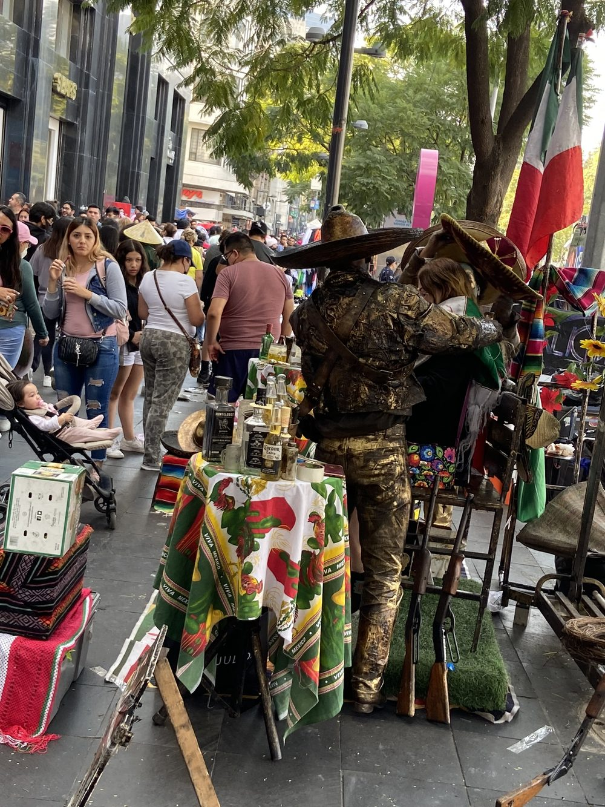
Lebende Statuen in goldbemalter Charro-Tracht – Fotomotiv gegen ein paar Pesos.
Calle Madero und Downtown: Die Fußgängerzone Madero verbindet Bellas Artes mit dem Zócalo und ist sonntags brechend voll. Ein Abstecher in den Innenhof eines Kolonialpalasts, heute voller Restaurants unter alten Bäumen.
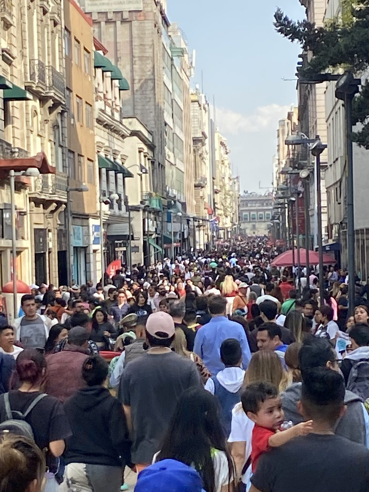
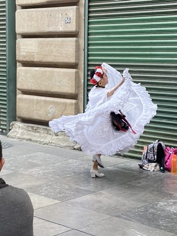
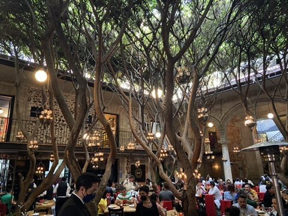
Plaza Garibaldi: Hier schlägt das Herz der Mariachi-Musik, seit 2011 UNESCO-Kulturerbe. Die Musiker in Charro-Anzügen warten auf dem Platz auf Kundschaft und spielen in den Cantinas ringsum Lied für Lied gegen Bezahlung. Bronzestatuen erinnern an die großen Stimmen der Ranchera-Musik.
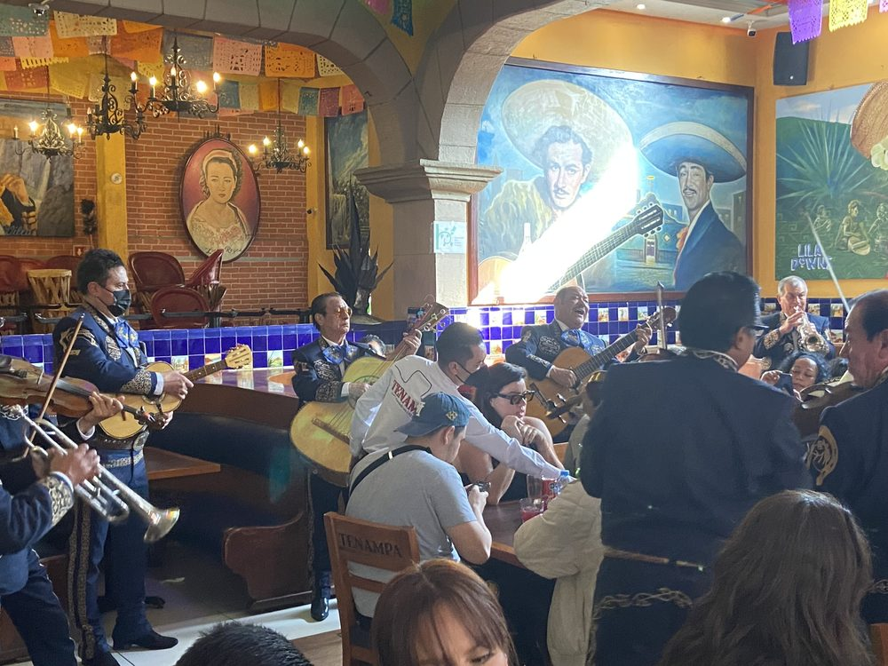
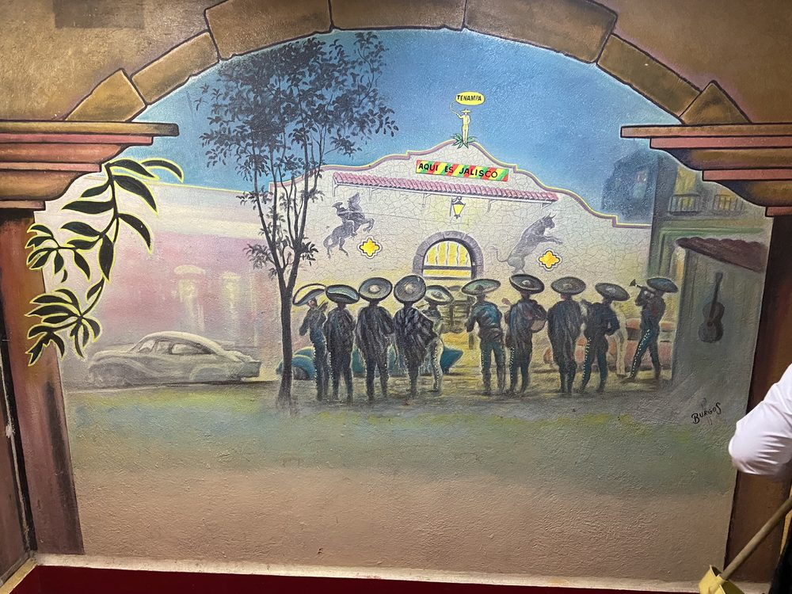
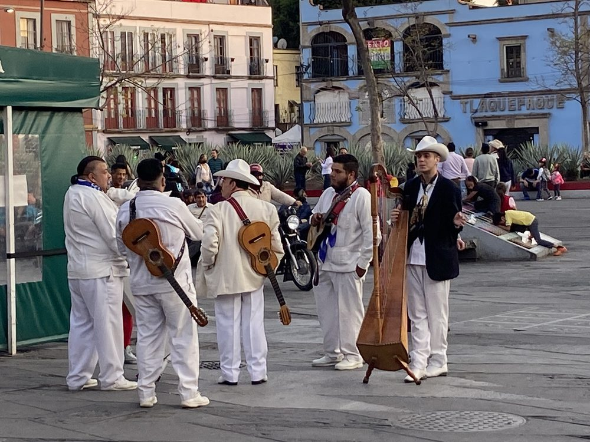
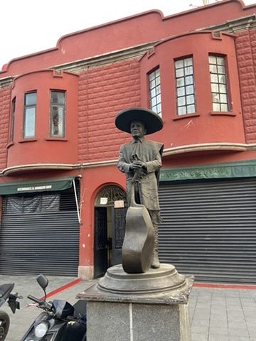
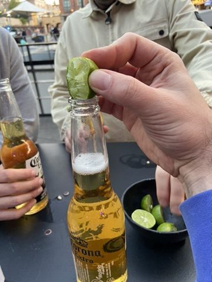
Und zum Schluss: Limette in die Flasche. Salud!